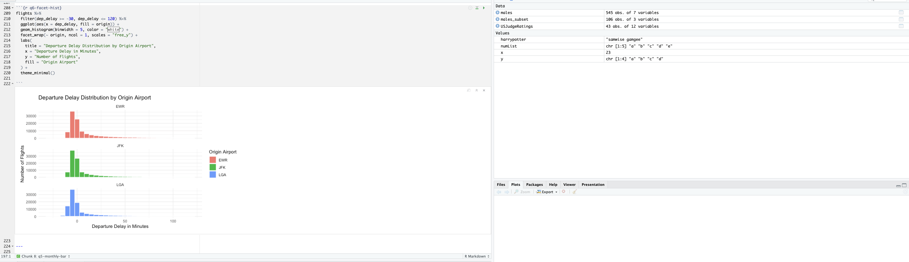

About Me
My name is Cinthia Mariana Ochoa Torre, and I am a Data Science student with a strong interest in technology, research, and problem solving.
I am originally from Peru, and studying abroad has helped me become more independent, organized, and adaptable. This experience has also motivated me to keep improving both academically and personally.
My academic interests include data science, artificial intelligence, machine learning, and responsible technology. I enjoy learning how data can be used to understand real-world problems and create better solutions.
In the future, I hope to use my technical skills to support meaningful projects, especially in areas related to research, education, and social impact.

Skills and Interests
- Python programming
- SQL and database systems
- Data visualization
- Machine learning
- Research and problem solving
Timeline and Goals
“It is not possible to produce a set of rules purporting to describe what a man should do in every conceivable set of circumstances.” ― Alan Turing
- Strengthen my skills in programming, data analysis, and problem-solving.
- Work on projects that help me apply classroom concepts to real-world situations.
- Gain experience through internships, research, and collaborative opportunities.
- Build a strong professional network and continue learning from mentors and peers.
- Graduate with a solid foundation in Data Science and continue growing in the field.

Education Table
| Area | Current Focus | Future Goal |
|---|---|---|
| Education | Data Science | Graduate with strong technical skills |
| Technology | Python, SQL, and AI | Work on real-world data projects |
| Career | Building experience | Gain internship or research opportunities |
Links
Visit my LinkedIn profile.
View my projects on GitHub.